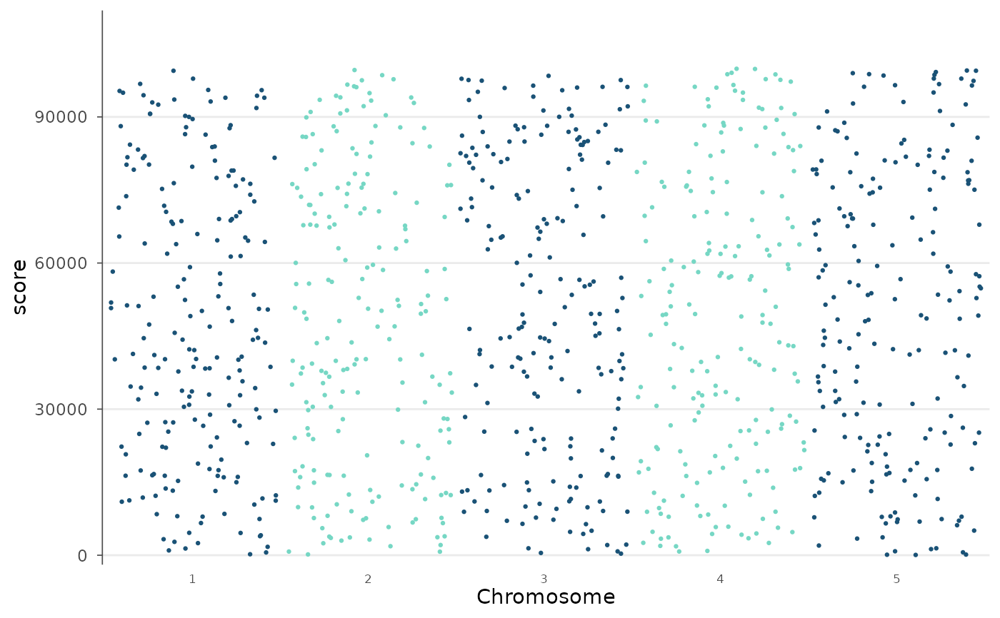
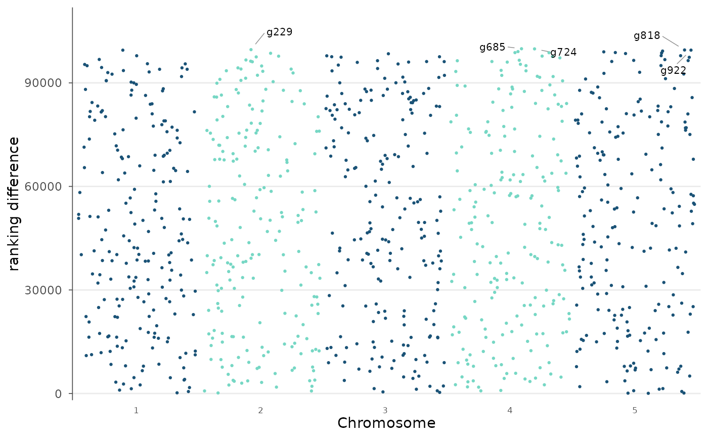
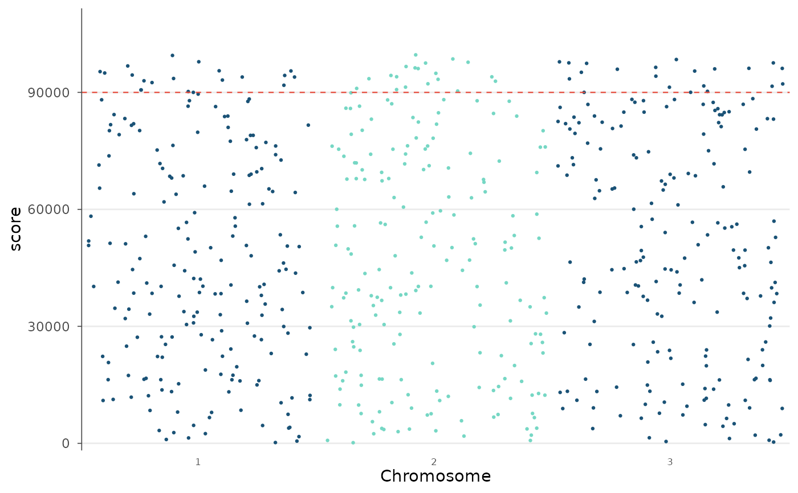

Plot any numeric value assigned to a genomic feature (gene, transcript,
window) along the genome in Manhattan style: features on the genomic x-axis,
the value on the y-axis, alternating chromosome colors. Unlike
manhattan_plot(), which expects GWAS p-values, this plots the value
as-is, so it suits rankings, effect sizes, ranking differences between two
transcriptome references, conservation scores, read counts, and similar
per-feature metrics. Returns a ggplot2 object for further customization.
Usage
value_manhattan(
data,
value = NULL,
chr = NULL,
bp = NULL,
id = NULL,
annotate = NULL,
build = c("GRCh38", "GRCh37"),
release = NULL,
gtf = NULL,
ensdb = NULL,
id_type = c("ensembl_gene_id", "symbol"),
label = NULL,
colors = c("#1A5276", "#76D7C4"),
point_size = 0.8,
alpha = 1,
threshold = NULL,
threshold_color = "#E74C3C",
highlight = NULL,
highlight_color = "#E74C3C",
highlight_size = 2,
label_ids = NULL,
label_top_n = NULL,
chromosomes = NULL,
chr_labels = NULL,
y_label = NULL,
y_limit = NULL,
title = NULL
)Arguments
- data
A data.frame (or tibble/data.table) with one row per feature.
- value
Name of the column holding the value to plot on the y-axis. Required.
- chr, bp
Column names for chromosome and genomic position (auto-detected if NULL). Ignored when
annotateis set, because the coordinates are then looked up from the gene IDs.- id
Column holding gene identifiers (Ensembl gene IDs or symbols), used when
annotateis set (auto-detected if NULL).- annotate
Annotation backend to map
idto genomic coordinates: one of"gtf","builtin","biomart"or"ensdb"(seeannotate_positions()).NULL(default) means the data already carrychr/bpcolumns.- build
Genome build for
annotate = "builtin"/"biomart":"GRCh38"(default) or"GRCh37".- release
Ensembl release for
annotate = "biomart"(NULL= current).- gtf
Path to a GTF/GFF3 file for
annotate = "gtf".- ensdb
An
EnsDbobject forannotate = "ensdb".- id_type
Whether
idholds Ensembl gene IDs ("ensembl_gene_id", default) or gene symbols ("symbol").- label
Column holding feature labels (e.g. gene symbol), used by
highlight,label_idsandlabel_top_n. Whenannotateis set andlabelis NULL, the looked-up gene symbol is used.- colors
Two-color vector for alternating chromosomes.
- point_size
Point size.
- alpha
Point transparency.
- threshold
Optional numeric vector of y-values at which to draw horizontal reference lines (in the units of
value).- threshold_color
Color for the threshold lines.
- highlight
Values of the
labelcolumn to highlight.- highlight_color
Color for highlighted features.
- highlight_size
Size for highlighted points.
- label_ids
Values of the
labelcolumn to annotate with text.- label_top_n
Annotate the N features with the largest value (largest absolute value when the data contains negative values).
- chromosomes
Subset of chromosomes to plot (integer vector).
- chr_labels
Custom chromosome labels. Options: NULL (all labels),
"odd"(only odd-numbered chromosomes labeled), or a character vector of labels (same length as displayed chromosomes).- y_label
Y-axis title. Defaults to the
valuecolumn name.- y_limit
Upper y-axis limit.
- title
Plot title.
Examples
set.seed(1)
df <- data.frame(
chr = rep(1:5, each = 200),
bp = as.integer(runif(1000, 1, 2e8)),
score = round(runif(1000, 0, 1e5)),
gene = paste0("g", 1:1000)
)
# Basic value Manhattan
value_manhattan(df, value = "score")

# Label the top features and set a custom y-axis title
value_manhattan(df, value = "score", label = "gene",
label_top_n = 5, y_label = "ranking difference")

# Add a reference line and restrict to a few chromosomes
value_manhattan(df, value = "score", threshold = 90000,
chromosomes = 1:3)
